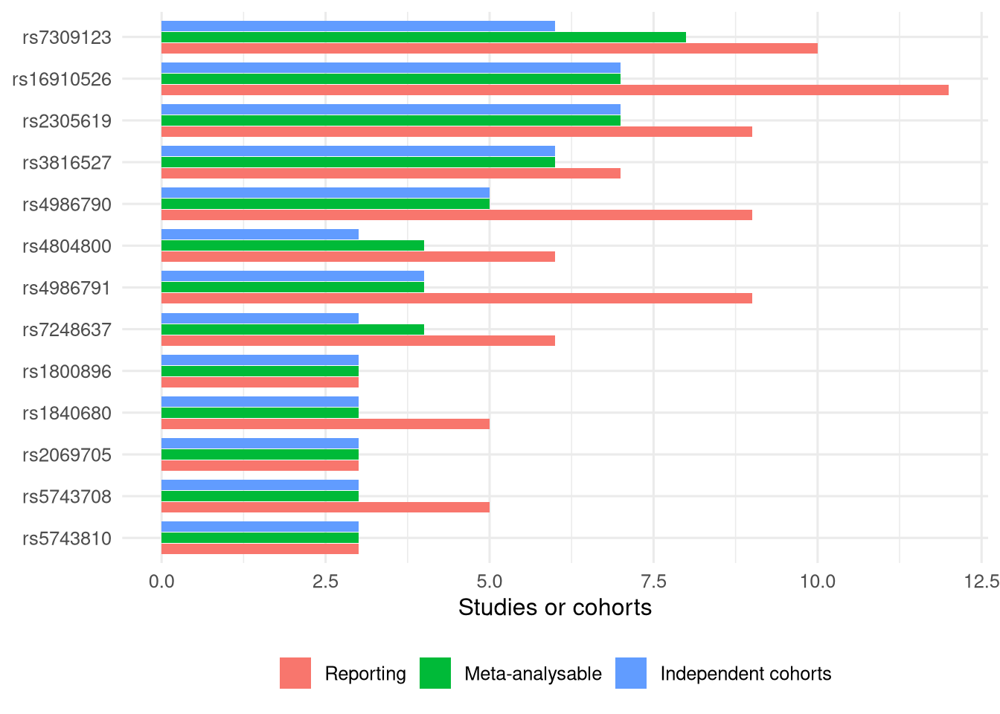

Code
source("_setup.R")
cand <- read.csv("data/panel_candidates.csv")
ind <- read.csv("data/cohort_independence.csv")What the systematic search produced, and how much of it can be pooled
October 19, 2026
Counts on this page are taken from the working status document as at 16 October 2026 unless a table is computed from a file in data/. No extracted row has been checked against its source PDF by a human. Treat every number below as provisional.
flowchart TD A["831 unique records screened<br/>(PubMed 263, Embase 568)"] --> B["81 included"] B --> C["63 extracted from a usable source"] B --> D["12 with no PDF supplied"] B --> E["6 voided: wrong source document"] C --> F["2,008 variant rows<br/>after supplementary files"]
Several records without a PDF look like conference abstracts of papers already included in full. If confirmed, they are duplicate reports of the same cohort and not missing data, which changes the PRISMA numbers.
A row is usable if it carries a complete effect estimate with an orientable effect allele, or a complete genotype table with both alleles named.
tibble(
Tier = c("estimate", "counts_2x3", "counts_2x2"),
Rows = c(823, 115, 32),
Meaning = c(
"Effect estimate, both confidence limits and the effect allele",
"All six genotype cells with both alleles named",
"Complete 2x2 under a stated dominant, recessive, carrier or allelic model; weaker, kept as a separate sensitivity stratum"
)
) |> gt() |> fmt_integer(Rows)| Tier | Rows | Meaning |
|---|---|---|
| estimate | 823 | Effect estimate, both confidence limits and the effect allele |
| counts_2x3 | 115 | All six genotype cells with both alleles named |
| counts_2x2 | 32 | Complete 2x2 under a stated dominant, recessive, carrier or allelic model; weaker, kept as a separate sensitivity stratum |
Counts of reporting studies overstate independent evidence, because the Spanish registry series and the Jena AML cohorts overlap. The last column collapses same-group series.
panel_tab <- cand |>
filter(studies_inclusive >= 3) |>
left_join(ind |> select(rsid, independent = effective_independent_cohorts_worst_case), by = "rsid") |>
arrange(desc(studies_inclusive), rsid)
panel_tab |>
transmute(
rsID = rsid, Gene = gene, `Studies reporting` = n_studies,
`Via estimate` = studies_via_estimate, `Via 2x3 counts` = studies_via_counts_2x3,
`Via 2x2 counts` = studies_via_counts_2x2,
`Meta-analysable` = studies_inclusive, `Independent cohorts` = independent
) |>
gt()| rsID | Gene | Studies reporting | Via estimate | Via 2x3 counts | Via 2x2 counts | Meta-analysable | Independent cohorts |
|---|---|---|---|---|---|---|---|
| rs7309123 | CLEC7A | 10 | 7 | 1 | 0 | 8 | 6 |
| rs16910526 | CLEC7A | 12 | 6 | 3 | 1 | 7 | 7 |
| rs2305619 | PTX3 | 9 | 5 | 1 | 1 | 7 | 7 |
| rs3816527 | PTX3 | 7 | 4 | 2 | 1 | 6 | 6 |
| rs4986790 | TLR4 | 9 | 1 | 4 | 0 | 5 | 5 |
| rs4804800 | CD209 | 6 | 4 | 0 | 0 | 4 | 3 |
| rs4986791 | TLR4 | 9 | 1 | 3 | 0 | 4 | 4 |
| rs7248637 | CD209 | 6 | 4 | 0 | 0 | 4 | 3 |
| rs1800896 | IL10 | 3 | 3 | 0 | 0 | 3 | 3 |
| rs1840680 | PTX3 | 5 | 3 | 0 | 0 | 3 | 3 |
| rs2069705 | IFNG | 3 | 2 | 1 | 0 | 3 | 3 |
| rs5743708 | TLR2 | 5 | 1 | 2 | 0 | 3 | 3 |
| rs5743810 | TLR6 | 3 | 2 | 1 | 0 | 3 | 3 |
13 variants reach three or more meta-analysable studies.
panel_tab |>
select(rsid, Reporting = n_studies, `Meta-analysable` = studies_inclusive,
`Independent cohorts` = independent) |>
pivot_longer(-rsid, names_to = "measure", values_to = "n") |>
mutate(measure = factor(measure, c("Reporting", "Meta-analysable", "Independent cohorts")),
rsid = factor(rsid, levels = rev(panel_tab$rsid))) |>
ggplot(aes(n, rsid, fill = measure)) +
geom_col(position = position_dodge(width = 0.8), width = 0.75) +
labs(x = "Studies or cohorts", y = NULL, fill = NULL) +
theme(legend.position = "bottom")
Reported alleles were compared with the alleles segregating in Europeans in dbSNP. A flipped strand inverts the risk allele and so the sign of the modelled effect.
| Flag | Rows |
|---|---|
| fwd_ok | 701 |
| strand_flip | 188 |
| palindromic_unresolvable (A/T or C/G) | 130 |
| single_allele_only | 234 |
| no alleles reported | 444 |
| mismatch (allele absent from dbSNP) | 4 |
| no valid rsID | 306 |
Within the panel, the affected variants are rs16910526, rs1800896, rs2069705 and rs5743810 (10 study by variant cells). rs7309123 is a C/G palindrome, so its strand cannot be settled from allele letters alone. Seven study cells need an assay reference, a strand statement or an allele-frequency comparison.
| Gap | Cells | Route |
|---|---|---|
| Counts in a supplement not supplied | 9 | Retrieve supplement |
| Estimate printed but no nucleotide allele anywhere | 10 | Author contact, or drop |
| Reported as a null with no numbers | 3 | Author contact |
| Data only inside a figure | 2 | Author contact |
TLR4 is usable only through genotype counts. Every contributing cohort has zero minor homozygotes in cases and controls, so only a carrier model is estimable and a continuity correction is needed.
---
title: "Evidence base"
subtitle: "What the systematic search produced, and how much of it can be pooled"
date: today
---
```{r}
#| label: setup
#| code-fold: true
source("_setup.R")
cand <- read.csv("data/panel_candidates.csv")
ind <- read.csv("data/cohort_independence.csv")
```
Counts on this page are taken from the working status document as at 16 October 2026 unless a table is
computed from a file in `data/`. **No extracted row has been checked against its source PDF by a human.**
Treat every number below as provisional.
## From search to extracted rows
```{mermaid}
flowchart TD
A["831 unique records screened<br/>(PubMed 263, Embase 568)"] --> B["81 included"]
B --> C["63 extracted from a usable source"]
B --> D["12 with no PDF supplied"]
B --> E["6 voided: wrong source document"]
C --> F["2,008 variant rows<br/>after supplementary files"]
```
Several records without a PDF look like conference abstracts of papers already included in full. If
confirmed, they are duplicate reports of the same cohort and not missing data, which changes the PRISMA numbers.
## Rows that can be pooled
A row is usable if it carries a complete effect estimate with an orientable effect allele, or a complete
genotype table with both alleles named.
```{r}
#| label: tbl-tiers
#| tbl-cap: "Usable rows by tier (16 October 2026)."
tibble(
Tier = c("estimate", "counts_2x3", "counts_2x2"),
Rows = c(823, 115, 32),
Meaning = c(
"Effect estimate, both confidence limits and the effect allele",
"All six genotype cells with both alleles named",
"Complete 2x2 under a stated dominant, recessive, carrier or allelic model; weaker, kept as a separate sensitivity stratum"
)
) |> gt() |> fmt_integer(Rows)
```
## Variants reported by three or more studies
Counts of reporting studies overstate independent evidence, because the Spanish registry series and the Jena
AML cohorts overlap. The last column collapses same-group series.
```{r}
#| label: tbl-evidence
#| tbl-cap: "Panel candidate variants: studies reporting, how each contributes, and independent cohorts."
panel_tab <- cand |>
filter(studies_inclusive >= 3) |>
left_join(ind |> select(rsid, independent = effective_independent_cohorts_worst_case), by = "rsid") |>
arrange(desc(studies_inclusive), rsid)
panel_tab |>
transmute(
rsID = rsid, Gene = gene, `Studies reporting` = n_studies,
`Via estimate` = studies_via_estimate, `Via 2x3 counts` = studies_via_counts_2x3,
`Via 2x2 counts` = studies_via_counts_2x2,
`Meta-analysable` = studies_inclusive, `Independent cohorts` = independent
) |>
gt()
```
`r nrow(panel_tab)` variants reach three or more meta-analysable studies.
```{r}
#| label: fig-evidence
#| fig-cap: "Reporting studies, meta-analysable studies and independent cohorts for each candidate variant."
#| fig-height: 5
panel_tab |>
select(rsid, Reporting = n_studies, `Meta-analysable` = studies_inclusive,
`Independent cohorts` = independent) |>
pivot_longer(-rsid, names_to = "measure", values_to = "n") |>
mutate(measure = factor(measure, c("Reporting", "Meta-analysable", "Independent cohorts")),
rsid = factor(rsid, levels = rev(panel_tab$rsid))) |>
ggplot(aes(n, rsid, fill = measure)) +
geom_col(position = position_dodge(width = 0.8), width = 0.75) +
labs(x = "Studies or cohorts", y = NULL, fill = NULL) +
theme(legend.position = "bottom")
```
## Allele orientation
Reported alleles were compared with the alleles segregating in Europeans in dbSNP. A flipped strand inverts
the risk allele and so the sign of the modelled effect.
```{r}
#| label: tbl-orientation
#| tbl-cap: "Orientation flag across all 2,008 variant rows (16 October 2026)."
tibble(
Flag = c("fwd_ok", "strand_flip", "palindromic_unresolvable (A/T or C/G)", "single_allele_only",
"no alleles reported", "mismatch (allele absent from dbSNP)", "no valid rsID"),
Rows = c(701, 188, 130, 234, 444, 4, 306)
) |> gt() |> fmt_integer(Rows)
```
Within the panel, the affected variants are rs16910526, rs1800896, rs2069705 and rs5743810 (10 study by
variant cells). rs7309123 is a C/G palindrome, so its strand cannot be settled from allele letters alone.
Seven study cells need an assay reference, a strand statement or an allele-frequency comparison.
## What extraction could not recover
| Gap | Cells | Route |
|---|---|---|
| Counts in a supplement not supplied | 9 | Retrieve supplement |
| Estimate printed but no nucleotide allele anywhere | 10 | Author contact, or drop |
| Reported as a null with no numbers | 3 | Author contact |
| Data only inside a figure | 2 | Author contact |
*TLR4* is usable only through genotype counts. Every contributing cohort has zero minor homozygotes in cases
and controls, so only a carrier model is estimable and a continuity correction is needed.